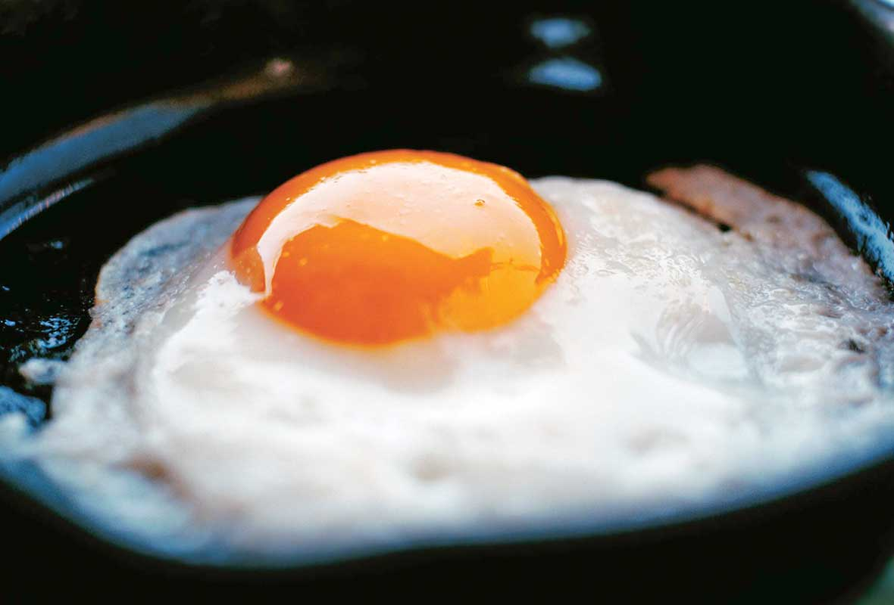

How to make
a Croque Madame
Yields 4 Sandwiches
Prep 5 min
Cook 5 min
Ingredients
- 6 ounces unsalted butter, divided
- 2 tablespoons flour
- 1 cup whole milk
- 1 bay leaf
- 1/2 teaspoon kosher salt, plus more for seasoning
- 1/4 cup grated Parmesan
- 8 slices thick sourdough bread
- 8 to 12 slices good quality ham (about 3/4 pound)
- 12 ounces Gruyere cheese, grated, divided
- Nonstick spray
- 4 eggs
Directions
- Preheat the broiler.
- Make the bechamel sauce: In a saucepan, melt 1 ounce of butter over medium heat. Whisk in the flour, stirring constantly, until you smell the flour and butter cooking. Do not allow it to brown. Add the milk and bay leaf, stirring from time to time, until the mixture thickens like a soup, 10 to 12 minutes. Remove the bay leaf and stir in the Parmesan. Transfer to a bowl to cool.
- Arrange 4 slices of the bread on a flat surface. Top each with 2 to 3 slices of ham. Mix together half of the Gruyere cheese and the bechamel sauce. Taste for seasoning. Spread a little of the sauce on top of the ham and top each with another slice of bread.
- Heat a large cast iron skillet and, when hot, add half of the remaining butter. Add 2 of the sandwiches and brown on one side, 2 minutes. Turn on the other side and brown 2 more minutes. Transfer to a baking sheet and repeat with the remaining butter and sandwiches. Spread the remaining bechamel on top of the sandwiches and top with the other half of the Gruyere cheese.
- Wipe any crumbs from the cast iron skillet and spray with nonstick spray. Crack 4 eggs into the skillet, leaving a little room between each. (Alternatively, fry 2 at a time). While the eggs are frying, place the sandwiches under the broiler and broil until the top becomes golden brown, 1 to 2 minutes. Season the eggs with salt and top each sandwich with a fried egg. Serve immediately.

